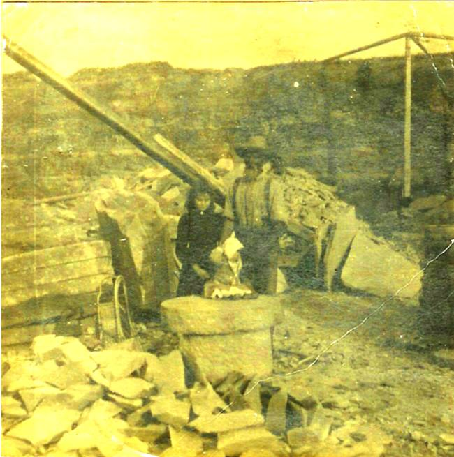

The Family Chronicle
No. 93 April 8 , 2005
____________________________________________________________________

My Grandfather, Walter Glendenning, with his daughter, Margaret at a stone quarry in Stonehaven, near Bathurst, N.B. I recall the stone quarry when we would visit relatives in the area. As I recall, some relatives owned the stone quarry. The quarry has now been eroded by wind and water.
D. Ernest Watling
From a clipping – date and paper unknown:
"The death of D. Ernest Watling Sr. of Manse Lane, Loggieville, occurred Sunday at Hotel Dieu, here, following a long illness. He was 81. Born at Black River Bridge, he was the son of the late Jubal and Grace (MacDonald) Watling.
He attended Knox United Church, Loggieville, and was a veteran of the First World War, serving overseas with the 26th Battalion. During the Second World War he was a security guard at CFB Chatham. He was a member of the Chatham Branch
Royal Canadian Legion. For a number of years the family resided in Niagara Falls and, following their return to the Miramichi, he worked for W S Loggie Company Limited here until his retirement some years ago.
He is survived by his wife, the former Alice MacLean of Black River Bridge; one daughter, Mrs. Everett Wishart (Joyce) of Bathurst; three sons, Clifton (Kip) of Camp bellton, Ernest of Buffalo, NY, Gilbert of Newcastle; one sister, Mrs. John R. Godfrey (Janet) of Black River Bridge; one brother, James A Watling also of Black River Bridge, and by 16 grandchildren. The body is resting at his home in Loggieville.
The Funeral will be held at 2:30 pm Tuesday at Knox United Church, Loggieville, with entombment in Black River Memorial Vault to await burial in the spring.
And from the Moncton Times of December 9, 1990:
LOGGIEVILLE (Special) - Mrs. S. Alice Watling, 91, widow of D.Ernest Watling, died Wednesday at the Hotel Dieu Hospital, Chatham, following a brief illness.
Born in Black River Bridge, she was the daughter of the late Donald H. and Catherine (Fowlie) MacLean. She was a member of Knox United church, Loggieville, and a life member of the United Church women.
She was predeceased by her husband in 1973;and by a son, Ernest, earlier this year.
She is survived by a daughter, Mrs. Everett Wishart (Joyce) of Bathurst; two sons, Clifton (Kip) of Campbelton, and Gilbert (Gib) of Newcastle; a brother James of Hopedale, Mass.; 16 grandchildren; 17 great- grandchildren; and several nieces and nephews.
The body is at her residence in Loggieville. Funeral service will be held Wednesday at 2 p.m. at Knox United Church, Loggieville. Interment will be in Black River cemetery.
I mean siphoning gas not smelling it. We always seemed to have a 45-gallon drum of gasoline around our place. It was used when sawing wood, threshing, in the old truck or just for cleaning greasy hands or parts of machinery. Gas for the farm was at a reduced cost and had a dye it; otherwise one purchased gas from a retailer. There was a stiff fine for using tractor gas when driving for pleasure.
One transferred gasoline from the barrel by a pump, by replacing the small bung with a spigot, or by siphoning. Sometimes one had to siphon gasoline from the gas tank of the truck.
To siphon, one used a piece of hose, pushed it down into the barrel thus filling the hose with gasoline. While holding a thumb over the end of the hose, one quickly pulled the hose dropping the end into the smaller container. Then one removed one’s thumb. With luck, the gasoline flowed from the barrel to the container. When finished, put your thumb over the end of the hose to stop the flow of liquid, and raise the hose until the end is above the level of the gasoline in the barrel.
An alternative was to put one end of the hose into the barrel, put your mouth to the other end and suck thereby removing the air and drawing up the liquid - just like drinking through a straw. When the gas reached your mouth, one dropped the end of the hose into the can and let the gasoline run until the can is filled. In the process, one sometimes ended up with a mouthful of gasoline.
I’ve been asked about my ethnicity. I am not quite sure how to calculate it. As best I can determine, my Great Grandparents were:
Scottish 8 50
English 2 12.5
Irish 6 37.5
Total 16 100
The percentages may change if one used earlier generations.
The Chronicle is an occasional newsletter published by Don Glendenning and posted on the family website. It is intended to share information about my family, community and the times in which I grew up. While every effort is made to be accurate, errors are likely to occur. Comments, enquiries and information may be sent to 62 Queen Elizabeth Drive, Charlottetown, PEI, C1A 3A9. Tel:902 892 5859. Email: dglende@auracom.com Web: www.glendenning.net